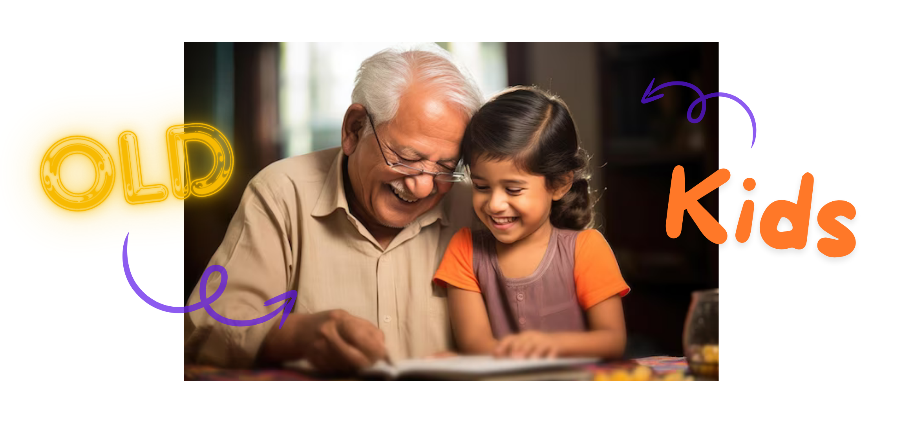

Old Kids: Bridging the Generational Gap
An intergenerational matchmaking & mentorship platform designed to connect teenagers and life veterans, countering youth loneliness and senior isolation.

We live in a hyper-connected digital world, yet research shows that younger generations (ages 13-25) are increasingly struggling to find purpose, dealing with isolation, and failing to connect with life at its simplest. One of the underlying causes is a growing structural disconnect from their grandparents and the elderly.
Simultaneously, older people (ages 50+) are living longer but experiencing acute loneliness and a feeling of being "unwanted" in a fast-paced society, often detached from the dynamic situations the younger generation goes through.
The Opportunity: Establish "Old Kids" — a peer-to-peer platform connecting youth and veterans of life for 1-on-1 audio/video storytelling, mentorship, and mutual understanding.
The Core Value Proposition
The platform operates as a dual-sided matching ecosystem where teenagers and seniors connect to exchange value. Unlike typical social networks or mentorship sites that focus on professional advice, "Old Kids" centers on wisdom transfer, storytelling, and emotional companionship.
Mutual Value Creation Grid
Market Research & Data Validation
To validate if there was actual demand for such a connection, we conducted a quantitative survey obtaining 111 valid responses, primarily from teenagers and college students (average age of 20.2 years, ranging from 17 to 30).
Research Insight: The data highlights a significant unmet demand. While 88.2% of youth desire regular (daily or weekly) interaction with elders, currently only 63.4% receive it. More importantly, the monthly/yearly communication drops drastically in desired scenarios, indicating that younger people actively seek frequent, meaningful dialogue but lack the channel to establish it.
Strategic Product Mitigations
Translating research responses and constructive criticisms into tangible product requirements, we address the primary product management risks for this platform.
- Risk: Safety concerns regarding malicious or creepy users leveraging P2P video calls.
- Mitigation: Implement Aadhaar/KYC identity verification for all accounts. Add real-time automated safety scanning of audio/video for harmful content and a prominent panic/report trigger.
- Risk: Many seniors above 60 are unfamiliar with complex mobile application flows.
- Mitigation: Build integration with WhatsApp. Seniors can dial a local phone number, verify, and receive session invites as simple WhatsApp links. App UI features large typography, voice navigation, and simplified button tabs.
- Risk: Launching a double-sided P2P marketplace requires balancing supply and demand.
- Mitigation: Partner with established NGOs, old-age orphanages, and senior clubs to group-enroll seniors. We equip old-age homes with pre-configured tablets and internet access to facilitate initial storytelling hours.
- Risk: Initial calls can be awkward, leading to users dropping off after one call.
- Mitigation: Activity-led prompts. Incorporate structured weekend themes, guided memory triggers (e.g. "Tell me about your school days", "Share a photo of your first job"), and regional storytelling tracks.
Product Design & Features
To make "Old Kids" successful, we design the product around three core pillars:
- Interest-Based Matchmaking Engine: Youth fill out onboarding cards highlighting areas of interest (e.g., career paths, history, cultural diversity, managing failures, travel stories). Seniors select tags based on their life adventures. The matching engine matches them for 1-on-1 scheduled sessions.
- Guided Conversation Prompts: To ensure high-quality conversations, each video call has a bottom-sheet prompt tray containing icebreaker cards, old photo sharing (supporting uploads from the elder's side), and mini cultural quizzes.
- Multi-Perspective Group Panels: Based on research suggestions, we introduce "Life Circles," where 2-3 elders share stories on a specific topic (e.g., "India in the 80s") with a group of 3-5 students, facilitating wider viewpoints and relaxing the pressure of 1-on-1 interactions.
Business Model & GTM
"Old Kids" is built as a social-impact business using a freemium model to ensure accessibility while sustaining development costs.
- Free Tier (Community Matchmaking): Basic interest-based matches for 15-minute storytelling chats. Focused on maximizing societal connection and loneliness reduction.
- Premium Tier (Curated Mentorship): Access to highly specialized life veterans (e.g., retired industry leaders, prominent professors, historical experts) for structured, recurring 1-on-1 mentorship. Includes session scheduling, recording, and progress tracking.
- B2B Corporate Partnerships (CSR): Collaborating with corporations under their Corporate Social Responsibility (CSR) budgets to sponsor digital literacy devices (tablets, headphones, internet) for participating old-age homes.
Reflections & Key Takeaways
Designing a platform like "Old Kids" for the Tata Imagination Challenge highlighted the importance of empathy in product design.
- Designing for Accessibility is Critical: A digital product that targets seniors must consider physical constraints (eyesight, motor skills) and digital literacy levels. Designing a Whatsapp-first call integration was a key shift to accommodate seniors' comfort zones.
- Mitigating Marketplace Risks: Double-sided marketplaces live and die by trust. By building safety (Aadhaar verification) directly into the core loop, we protect the vulnerable age groups on both ends of the platform.